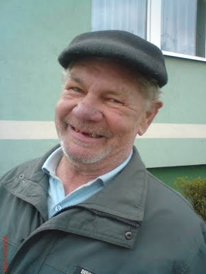

Dbając o najwyższy poziom obsługi i wychodząc naprzeciw oczekiwaniom naszych klientów staramy się nieustannie podnosić jakość świadczonych przez nas usług. Cechuje nas indywidualne oraz elastyczne podejście do biznesu i klienta. Nasz zespół Doradców Technicznych jak i Handlowców to grupa wykwalifikowanych specjalistów zawsze chętnych do udzielenia wyczerpujących informacji na temat oferowanych przez nas produktów. Każdego dnia dbamy o jak najlepsze relacje z naszymi partnerami handlowymi budując przy tym pozycje naszych marek we wszystkich kanałach dystrybucji.
Zamówienia można składać drogą mailową lub poprzez bezpośredni kontakt z naszym handlowcem. Dzięki jakościowym produktom, doskonałej komunikacji oraz sprawnej logistyce zyskujemy coraz większe grono zadowolonych klientów. Zapraszamy do współpracy.
Dział Handlowy
Szef zarządu
Maciej Zajączek
tel. 61 415 85 01
tel.kom. 511 758 061
zarzad@stuermer-maszyny.pl
Kierownik zarządu
Adam Olszowski
tel. 61 415 85 02
tel.kom. 511 758 062
a.olszowski@stuermer-maszyny.pl

Kierownik Sprzedaży
Kacper Łatka
tel. 61 415 85 03
tel.kom. 511 758 063
k.latka@stuermer-maszyny.pl
Księgowość
Marek Kurwiskok
tel. 61 415 85 04
tel.kom. 511 758 061
ksiegowos@stuermer-maszyny.pl
Zamówienia
Sebastian Kłak
tel. 61 415 85 01
tel.kom. 511 758 04
zamowienia@stuermer-maszyny.pl
Pracownicy w Terenie